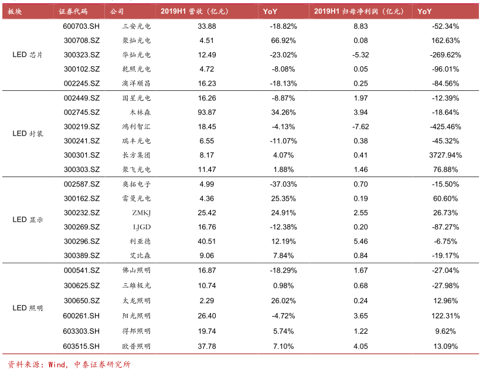
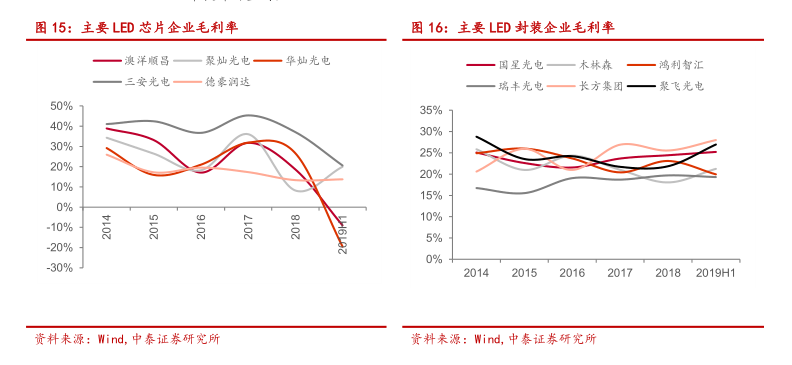
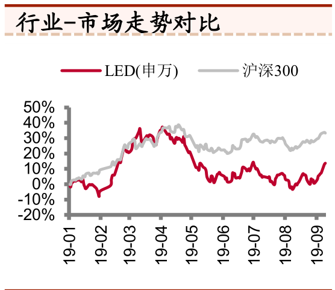
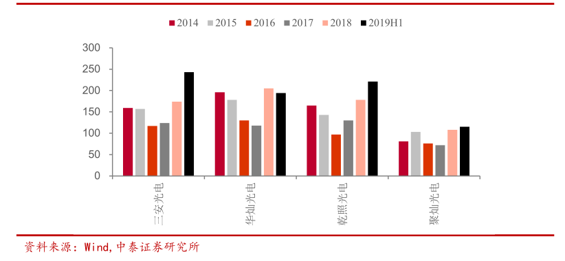
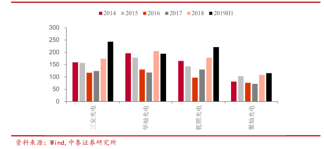
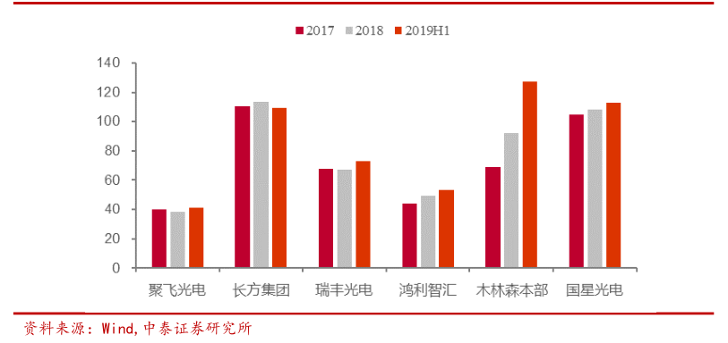
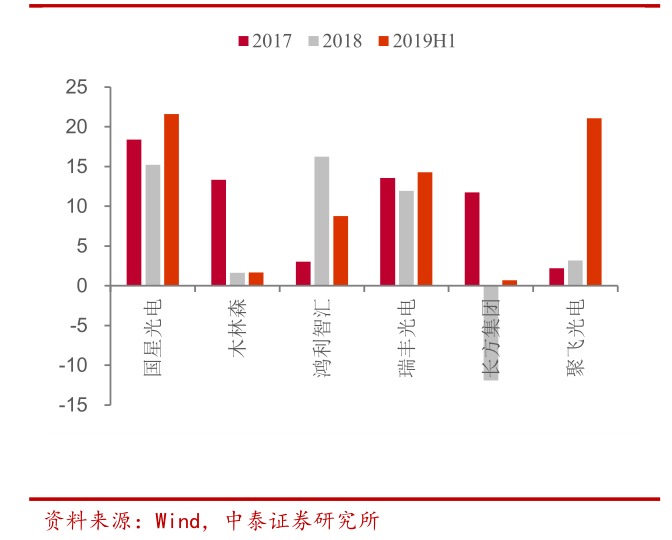

今年年初在女朋友的无意提及下，二月中旬将京东金融中的理财资金大部分转入某混合指数基金（定投方式），之后于三月中旬开通证券账户，自此开启了“韭菜投资”之路。从起初的小幅试水到如今的缓慢加仓，从时事新闻热门动态五花八门的不吝凤毛麟角到上下游供应链的行业聚焦，从典型的追赃杀跌低卖高买到网格止损止盈低买高卖，从如厕饮水间的频繁胡乱操作到持股不疑的买定里手，从股价起伏的如痴如癫到合理波动的冷眼看淡，小韭菜终于还是从小仓微盈到大仓亏损，算是交了入门的学费。
既然上学了不免要交点作业，于是将自己的部分市场行业调研笔记整理出来，遂成此文。
三安光电分析
近期在5G热潮下，科技板块中的三安光电显著拉升，但并不是走的LED芯片路线，而是国产替代下的5G第三代半导体（砷化镓，氮化镓）加速国产化。
化合物半导体作为半导体材料，砷化镓（GaAs）、氮化镓（GaN）和碳化硅（SiC）半导体分别作为第二代和第三代半导体的代表，砷化镓和氮化镓的主要应用都是射频前端的功率放大器等器件，某些标的受益 5G 逻辑，机构已经发掘了一年了，但股价一直没有大幅表现，原因是基本上产业还是被国外龙头（主要是美国公司）所把持，国内相对比较落后，真正的龙头三安在行业低谷期又深陷财务泥潭。但此次股价的表现，真正的预期差在于，由于今年的华为事件，华为在未来在射频前端需要去美国化，而且会选择国产供应商替代。
- 化合物半导体
砷化镓：主要以智能手机射频前端、5g 基础设施应用为主。近年来国家积极推动 5G 网络建设和商用化，4G/5G 通讯对射频器件有更高要求，未来 5g 手机中的 GaAs 器件数量将会增加 1-2 倍。从 Yole Development等第三方研究机构估算来看，2017 年全球用于 PA 的 GaAs 器到件市场规模达到 80-90 亿美元，大部分的市场份额集中于 Skyworks、Qorvo、Avago 三大巨头。预计随着通信升级未来两年有望正式超过 100 亿美元。
氮化镓：应用在汽车电子功率变频芯片、快充和军工方面，功率半导体的硅基板 GaN 技术市场，氮化镓射频器件高速成长，下游市场结构整体保持稳定。研究机构 Yole Development 数据显示，2017 年氮化镓射频市场规模为 3.8 亿美元，将于 2023 年增长至 13 亿美元，复合增速为22.9%。下游应用结构整体保持稳定，以通讯与军工为主，二者合计占比约为 80%。
宏观层面
正当贸易战，5G 升级+国产替代双轮驱动成长背景下化合物半导体实现国产自给自足已成为必然趋势。国内射频芯片龙头从上市卓胜微以来已暴涨近10倍。近期科技板块热潮有向上材料端蔓延的趋势，例如三安广电、云南锗业等砷化镓产业链相关企业都受到关注。日前，国家集成电路产业投资基金（二期）（简称“大基金二期”）的募资工作已经完成，规模在2000亿元左右，对集成电路产业链实属重大利好。
晶圆制造：重点投资了中芯国际，总投资将近160亿元，华力二期项目投入116亿元，以及上海华虹。
其中，第一期大基金投资半导体产业链公司如下：
存储器制造：大基金和紫光集团投资了长江存储科技公司
特色工艺制造：投资了杭州士兰微
化合物半导体制造：投资了三安光电
封装测试：投资了长电科技、通富微电和华天科技等
设计领域：投资了紫光展锐、中兴微电子
装备领域：投资了北方微和中微半导体，大基金重点推进了北方微与七星电子整合，组成北方华创，目前北方华创已成为国内最大的半导体装备企业，同时中微半导体的刻蚀机已在部分企业的大生产线上得到应用。
中观层面
在2015年的一则研报《三安光电：产业基金继续支持，砷化镓继续看好》中提到，三安光电在砷化镓等化合物半导体加大投入，并且有大基金加持，节选片段如下：
产业基金继续支持,砷化镓有望再造三安：继“国家集成电路产业投资基金”(简称为大基金)以48.39亿受让三安集团持有的上市公司9.07%的股份后,大基金通过本次非公开发行股份的认购，又一次对公司GaAs业务予以支持。本次非公开发行拟投入16亿用于通讯微电子器件(一期)项目，以GaAs和GaN等III-V族半导体为核心打造集成电路产业；该项目建成后将形成年产30万片GaAs和GaN年产6万片的产能：预计达产年销售收入401,539万元，新增年净利润59,624万元，有望再造一个三安。GaAs和GaN是通讯领域不可取代的半导体材料，技术门槛高，国家支持将为公司提供强有力的后盾。
LED行业发张趋势
LED 产业链分为上游芯片、中游封装、下游显示和照明，A股相关上市企业19年中报的原籍汇总如下：
从半年报数据来看，LED 产业链上下游均出现低迷，各板块均录得负增长，主要原因是各方前期库存量巨大情况下恶意的价格战导致的毛利率变低。上游芯片公司毛利率下滑甚至转负，中游及下游毛利率则回升。上游五家芯片公司中，澳洋顺昌与华灿光电上半年 LED 芯片毛利率均转为负值，这是重资产高折旧行业在周期底部常见的情形，三安光电毛利率仍位居第一，但是毛利率已经降至 20%出头。封装、显示、照明环节毛利率则普遍有所上升，包括 LED 芯片在内的原材料价格下降，给了中下游毛利率提升的空间。企业毛利率趋势图如下：
而年初小牛以来，各大基金和指数皆有不小的涨幅，LED板块受累于库存，整体涨幅不大，其与沪深300指数对比如下：
公司层面
三安光电主要从事全色系超高亮度LED外延片、芯片、Ⅲ-Ⅴ族化合物半导体材料、微波通讯集成电路与功率器件、光通讯元器件等的研发、生产与销售，产品性能指标居国际先进水平。三安中国LED市场份额29%；拥有1400多项专利，持续保持同样的芯片面积比竞争对手亮度高5%；提供国内第一条6寸氮化镓生产线。建立国内由手机芯片厂→ PA厂→SAW厂的垂直供应链策略联盟布局，替代进口，稳定RF原件市场。立足于III-V族化合物半导体材料，打造具有国际竞争力的射频、滤波器集成电路厂商。虽然 LED 芯片行业短期库存仍然较高，未来仍有去库存去产能的压力。但公司 PB 估值目前已处于历史底部区域。而公司化合物半导体目前获得产业链上下游的高度支持，有望获得突破，将提升公司中长期盈利增长空间。
三安集成作为国内化合物半导体制造平台龙头，立足国内广阔市场，面向全球高端需求。公司产品工艺布局较为完善，产品类别涵盖射频、电力电子、光通讯和滤波器板块，18 年在职员工已突破 800 人，营收约 1.71 亿元，出货客户累计至 73 家，出货产品达 270 种。随着公司砷化镓、光通讯产品逐渐受到客户大量验证使用，氮化镓和碳化硅产品逐渐由研发导入量产，2019年起出货量将会逐步增长，近期的股价上涨在三季报应该会有呈现。
库存分析：上半年龙头三安光电存货周转天数达到 243 天，创下历史记录，主要是LED芯片竞争激烈，价格相比去年同期降幅较大。
现金流质量分析：现金流质量稳中有升。
作为国内最大的Ⅲ-V族化合物半导体、集成电路龙头企业以及国内LED芯片的领导者，三安光电在全球的市场占有率接近二成，且仍在继续扩充产能。2013年至2017年，三安光电保持着业绩连增五年的成绩，2018年，LED行业整体需求下行，该公司的盈利随之下滑。
据三安光电半年报披露，公司旗下的泉州三安半导体项目顺利推进，部分设备进入安装调试阶段，预计下半年部分产能开始逐步释放。7月底，三安光电Mini/Micro LED显示芯片产业化项目在湖北省鄂州市葛店经济技术开发区开工，项目总投资333亿元，预计建设7个产业化项目。
在射频代工领域，三安集成在国内市场进展加快，获得更多工艺平台的客户认证，公司产品量产节奏加快。在电力电子领域，公司已推出成熟的 650V/1200V SiC 器件工艺，并已获得包括北美客户在内的行业客户的认证及订单；GaN 器件相关工艺将于 2019 年第三季度完成所有工艺可靠性认证并推向市场。光通讯领域在发射及接收端，面向传统通信市场以及新兴的 5G 相关市场、数据中心及消费类市场，均已推出成套解决方案。
小结
目前股价阶段性上涨后呈震荡状态，三安光电当前市盈率20.25，获北上资金加仓，股价整体仍处于低位。另外，大基金前后投入约64.4亿，持仓成本为约22.36元，目前仍处于套牢中。
LED行业触底，化合物放量成新增长主力之际，就是三安光电化身真龙之时。
国星光电分析
- Mini（小间距） LED
Mini LED：小身材，大市场，高增长。作为一种在小间距 LED 基础上所衍生出的新型 LED 显示技术，mini LED 也被称为“亚毫米 LED”。由于具备优良的显示效果、较长的寿命和出色的性价比，mini LED 自诞生以来便广受关注，其下游应用可覆盖 RGB 显示屏、笔记本电脑背光、电视背光、手机背光、车载显示等诸多领域。
与 LCD 显示相比，小间距 LED 显示器具有无拼缝、高亮度和无反射图像的优点，其应用范围已从政府的公共信息显示扩展到商业显示。随着 LED 显示屏于租赁市场、HDR 市场应用、零售百货、会议室市场需求增加，小间距乃至于超小间距显示屏景气度将持续向好。而mini LED 技术作为小间距显示屏的自然延伸，无论下游应用还是工艺技术均可无缝衔接，有望为 LED 显示屏注入新的源头活水。
宏观层面
今年年初，工业和信息化部、国家广播电视总局、中央广播电视总台联合发布了《超高清视频产业发展行动计划（2019-2022年）》，《行动计划》提出了到2022年我国超高清视频产业的发展目标，在政策引导和各方资源积极投入下，产业总体规模有望超过4万亿元，超高清视频用户数达到2亿，4K产业生态体系基本完善，8K关键技术产品研发和产业化取得突破，形成技术、产品、服务和应用协调发展的良好格局。
2019年倍称为5G元年，5G商用助推超高清视频产业快速发展，mini LED 高清终端有望率先受益。
中观层面
LED作为显示技术的重要元件，透过技术不断突破，使显示屏在节能、显示效果上都能持续进步，尤其是Mini LED背光、Mini LED RGB以及Micro LED的出现，更满足不同取向的显示技术。其中Mini LED背光在经过近三年的努力开发后，已于2018下半年正式导入市场。
集邦咨询LED研究中心（LEDinside）最新《2019中国LED芯片与封装产业市场报告》显示，2018年中国LED封装市场规模为105亿美金，同比增长4.5%。展望2019年，LED照明已经进入成熟期，期待高端照明，如专业照明与健康照明的市场需求，紫外LED、车用照明和显示屏市场将是LED产业增长的主要推动力。
LEDinside在最新的《2019 Mini LED与HDR高阶显示器市场报告》中指出，苹果近期发表一款采用全新LED背光方案的Pro Display XDR 32寸6K显示器，带动显示器产业积极找寻高端产品的新技术方案，而下一代Mini LED背光技术将是各家厂商的开发重点，接下来将与OLED正面对决，成为面板产业的新契机。预估至2023年Mini LED背光产值将达3.4亿美元（仅Mini LED背光产值，不含其他驱动IC与背板）。
随着产业链各大厂商的协同发力，mini LED 这个诞生不久的行业新秀已然呈现出星火燎原之势。Yole 数据显示：全球 miniLED 显示设备将有望从 2019年的 3.24 百万台，增长至 2023 的 80.7百万台，年复合增长率高达 90%。
此外，5G 商用助推超高清视频产业快速发展，随着 5G 商用稳步推进，更大带宽、更高网速必将促进超高清视频产业链不断完善和快速成长，而以手机、电视为代表的高清终端作为产业链中至关重要的一环，则有望率先受益。mini LED 背光显示屏无论从画质、饱和度、对比度均能达到 4K、6K、8K 的显示效果，且产品寿命和性价比均显著优于 OLED 显示方案，将有望成为各主流厂商超高清显示终端的最适宜选择。
并且，在车载显示中不管是采用 OLED 显示屏，还是采用传统的 TFT LCD显示屏，在制造成本与驾驶安全上，仍然有着很多不足。而 Mini LED属于在传统LED背光+TFT LCD显示屏的改良版本，采用直下式发光，精细的 HDR 分区显示，在对比度大幅提升，可以实现低余辉待机外，能耗也大幅降低，还具有比 OLED 更好的高温可靠性更高，寿命与TFT LCD 一样长。基于上述逻辑可以认为：随着技术的进一步成熟，车载显示市场将会成为 mini LED 背光继手机、电视以后的另一片蓝
海。
日前，苹果申请的一项与Micro LED相关的专利“验证微器件转移的光学验证系统”获批。Patently Apple消息显示，美国专利商标局（the US Patent and Trademark Office）已公布的苹果Micro LED专利有好几项，涉及于Micro LED芯片转移和结构，AR显示及可折叠设备。
据传荣耀智慧屏计划用mini的，最后还是用了量子点膜。而目前苹果和华为都有Mini LED供应链传出来的消息。
可见，在应用终端上头部企业都在积极布局，技术成熟后必将给供应链带来极大效益。
公司层面
国星光电作为中国LED封装细分领域的龙头企业，公司多次荣获国内LED知名品牌、最佳封装企业品牌、中国LED企业国际竞争力TOP10、最佳表现LED上市公司、年度优秀上市公司、年度品牌企业等荣誉称号。公司全面推行国际质量体系和环境体系，通过了ISO9001、ISO14001、IATF16949、OHSAS18001、ISO/IEC 17025、计量体系六大体系认证。2018年，在全球LED封装领域，国星光电营业收入和市场占有率位列全球第八（IHS Markit）。
库存：大部分企业存货周转天数略有上升，但是变化不大
现金流质量：经过18年的下降后，19年明显上升，行业“经营活动产生的现金流量净额/营业收入”对比如下：
2019 年上半年公司实现营业收入 16.26 亿元，同比下降 8.87%，主要由于 LED 白光封装业务价格下降和客户调整；归母净利润 1.97 亿元，同比下降 12.39%，主要由于公司芯片业务行业竞争惨烈，净利润大幅下滑。公司当前市盈率15.37，股价处于低部区域。
小结
标明目前行业已经进入去库存后半段，经过几个季度消化之后，有望进入主动补库存阶段。三季度如果显示止跌企稳的话，叠加 Mini 背光/显示新需求放量，行业景气将重新来临，借此，上游三安光电和下游利亚德都有报表修复的预期。
向下空间不高，反转后向上空间很大，赔率很高。